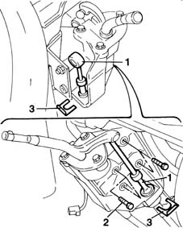
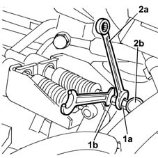
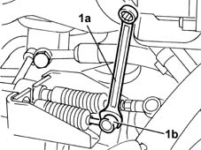
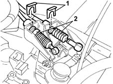

2125C30 gear engagement cable - r r
- Path
- Procedures > 21 GEARBOX > 2125 MANUAL GEARBOX EXTERNAL CONTROLS > 2125C manual gearbox external control (cables) > 2125C30 gear engagement cable - r r
- Kind
- repair procedure (removal / refitting; the operation number is the code)
- Applies to
- all engines; all production periods
- Interactive page
- https://sloeber94.github.io/elrnDB-fMltpl/en/#/2891552
Applies to: all engines; all production periods
 Removing
Removing
 Refitting
Refitting- 7040A24 lower facia cover trim - r+r
7040A09 passenger air bag compartment cover - r r
2125C24 gear lever knob - r + r
7065C10 air conditioning control panel - r+r
7040A11 control panel lid - r + r
5560B10 analogue control panel - r+r
7040A77 glass holder on facia trim - r r
7010M16 rear electric window enablement switch - r+r
7040A96 facia glove compartment flap (1) lh or rh - r r
5580C26 LOCK BARREL KEY/SWITCH for deactivating passenger 'AIR BAG - R.R.
7040A44 facia lh side cover - r r
7040A45 facia rh side cover - r r
7040A25 central facia trim - r r
5540C18 headlamp/light cluster alignment correction motor switch - r+r
7025A24 boot lid opening lever - r+r
7040L42 sill plate connection of one front door (1), lh or rh - r r
1. Remove the gear selection and engagement flexible transmission cable ends from the gear lever.
2. Undo the bolts securing the manual gear control lever.
3. Remove the two clips securing the flexible transmission cables, withdrawing them from the mounting.
Push the transmission cable sheath out towards and into the engine compartment.

Applies to: all engines; all production periods
1048A10 AIR CLEANER FILTERING ELEMENT - REPLACE
5530B52 Battery DRIP TRAY/SUPPORT - R.R.
1. Using two 10 mm spanners, adjust the hexagonal part (1a) on the head and loosen the locknut (1b).
2. Turn the spanner (2a) downwards, thereby releasing the track rod end (2b) from the ball joint. Lock the locknut before refitting the flexible cable.

Applies to: all engines; all production periods
1. Using an 11 mm spanner (1a) positioned between the track rod end and the ball joint, remove the track rod end (1b) from the ball joint.

Applies to: all engines; all production periods
1. Remove the two retaining clips.
2. Release the two transmission cables from the bracket and remove them.

Applies to: all engines; all production periods
Refitting
RemovingCheck that the transmission cables are not damaged.
Fit the two transmission cables in the bracket on the gearbox.
Fit the two retaining clips.
Secure the gear selection and engagement flexible cable ends on the relay unit.
5530B52 Battery DRIP TRAY/SUPPORT - R.R.
1048A10 AIR CLEANER FILTERING ELEMENT - REPLACE
Refit the transmission cable sheath.
Bring the flexible transmission cables level with the mounting and manual control lever.
Fit the two transmission cable clips, securing them to the mounting.
Fit the manual control lever mounting onto the bracket and tighten the bolts securing the control lever mounting.
Fit the gear selection and engagement flexible transmission cable ends onto the manual gear control lever.
7040L42 sill plate connection of one front door (1), lh or rh - r r
7025A24 boot lid opening lever - r+r
5540C18 headlamp/light cluster alignment correction motor switch - r+r
7040A25 central facia trim - r r
7040A45 facia rh side cover - r r
7040A44 facia lh side cover - r r
5580C26 LOCK BARREL KEY/SWITCH for deactivating passenger 'AIR BAG - R.R.
7040A96 facia glove compartment flap (1) lh or rh - r r
7010M16 rear electric window enablement switch - r+r
7040A77 glass holder on facia trim - r r
5560B10 analogue control panel - r+r
7040A11 control panel lid - r + r
7065C10 air conditioning control panel - r+r
2125C24 gear lever knob - r + r
7040A09 passenger air bag compartment cover - r r
- 7040A24 lower facia cover trim - r+r
Topics linked from this page (22)
- 1048A10 AIR CLEANER FILTERING ELEMENT - REPLACE
- 2125C24 gear lever knob - r + r
- 5530B10 battery - r+r
- 5530B52 Battery DRIP TRAY/SUPPORT - R.R.
- 5540C18 headlamp/light cluster alignment correction motor switch - r+r
- 5560B10 analogue control panel - r+r
- 5570T80 car radio unit - r+r
- 5580C26 LOCK BARREL KEY/SWITCH for deactivating passenger 'AIR BAG - R.R.
- 7010M16 rear electric window enablement switch - r+r
- 7025A24 boot lid opening lever - r+r
- 7040A04 facia lower trim-r r
- 7040A09 passenger air bag compartment cover - r r
- 7040A11 control panel lid - r + r
- 7040A25 central facia trim - r r
- 7040A37 fuse box cover - r r
- 7040A44 facia lh side cover - r r
- 7040A45 facia rh side cover - r r
- 7040A77 glass holder on facia trim - r r
- 7040A96 facia glove compartment flap (1) lh or rh - r r
- 7040L42 sill plate connection of one front door (1), lh or rh - r r
- 7065C10 air conditioning control panel - r+r
- 7065C42 ashtray (one) r+r